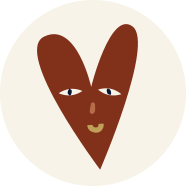

Consume only Neccessary
Consume
only
Neccessary

Sustainably, with heart.
Sustainably, with heart.
Hi!
We are Martina and Martin- couple, who’s paths were crossed from the first moment we’ve met. As it
usually goes with graduated managers, we joined in one of the multinational corporations. And even on the
same day. It didn’t take long, and colleagues became friends and friends became a couple.
In the environment where we worked an individual with our point of view soon begins to think whether his work makes sense at all. We increasingly started to perceive contradiction with our conviction and that it needs to be changed.
Compliance with our values is essential for us to be happy. We wrote everything down and decided what we would do. We left our jobs and now, there is BEZOBALiS in which we have combined what we are, what we enjoy and the change we want to achieve in society.
heart
We put both of our hearts into BEZOBALiS for everything we do: it will not let us work other than honestly and avoiding greenwashing. We always do everything to direct steps forward and we were a little better than yesterday. We have certainly still something to learn but we believe that if a person does work with the heart, it is also visible in the results. We do not want to distinguish whether we are happy in private or at work. We want to be happy all the time. And thanks to the love for what we do, we are doing well.
In today’s age of great consumption, we consider the direction of human activity towards ecology and sustainability to be a necessity. However, despite the growing promotion of the need to reflect on the future of our planet, we still observe that there is still huge room for improvement, especially in people’s daily lives. Through our activities, we want to contribute to reduce the ecological footprint not only of us as a company, but also give such an opportunity to the people who will visit it.
It is being said that we are what we eat. However, life has shown to both of us several times that we are greatly influenced by the people around us. We understood that interpersonal relationships are one of the things we want to care about, regardless of whether it is business or ordinary life. We value friendships and try to take care of them the best as we can. We want to be friends with nature, with food, with ourselves, with family, with other people. With you.
The fundamental pillar of our work is the belief that what we do really matters. We are not willing to endure the frustration of constantly thinking about “Why are we doing this?” The meaningfulness of our work is a driving force and motivation for us to take further steps to ensure that the service we provide is not only profit for us, but also to you, your children, grandchildren and our planet.
The fact how much people impact conditions of living on Earth by their actions is familiar to many of us. Most of times it seems that trying to live sustainably requires a lot of adaptation. We’re overthinking this problem, complicating our lives and sometimes even making sacrifices to help our planet at least a little. In our effort to find compromise between what is good for us and for the nature we’re daily facing obstacles in the form of consumption.
However, we honestly want to make the world a little bit better place for living.
Our mission is taking part in decreasing waste production in one of the first steps – while shopping. We would like to show you one of the possibilities of how to decrease your ecological footprint without making you feel that living “eco “ is expensive and complicated. We’re offering an alternative to the consuming way of living and we will be pleased to show you, that living sustainably can be easy and pleasant. We want to help people to live in a good relationship with nature while helping themselves too.